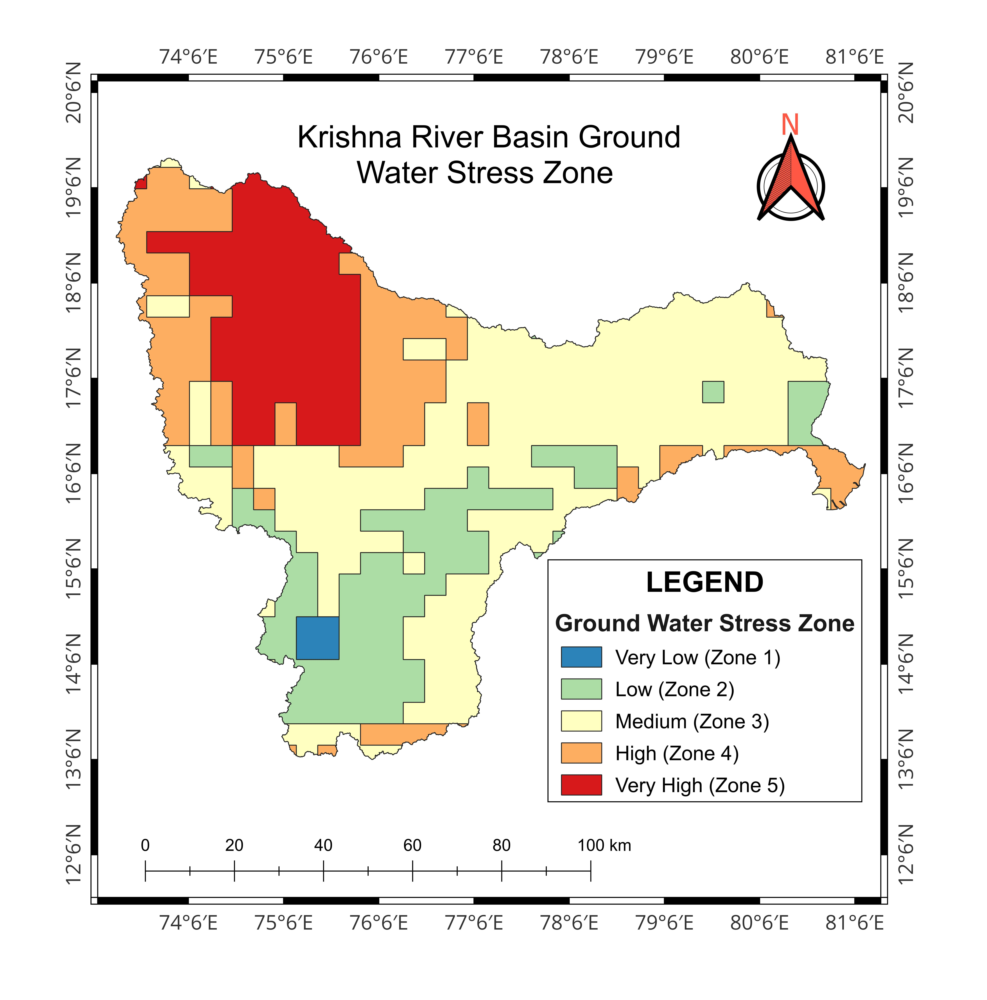
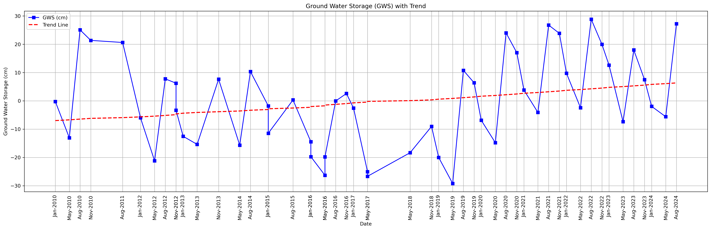
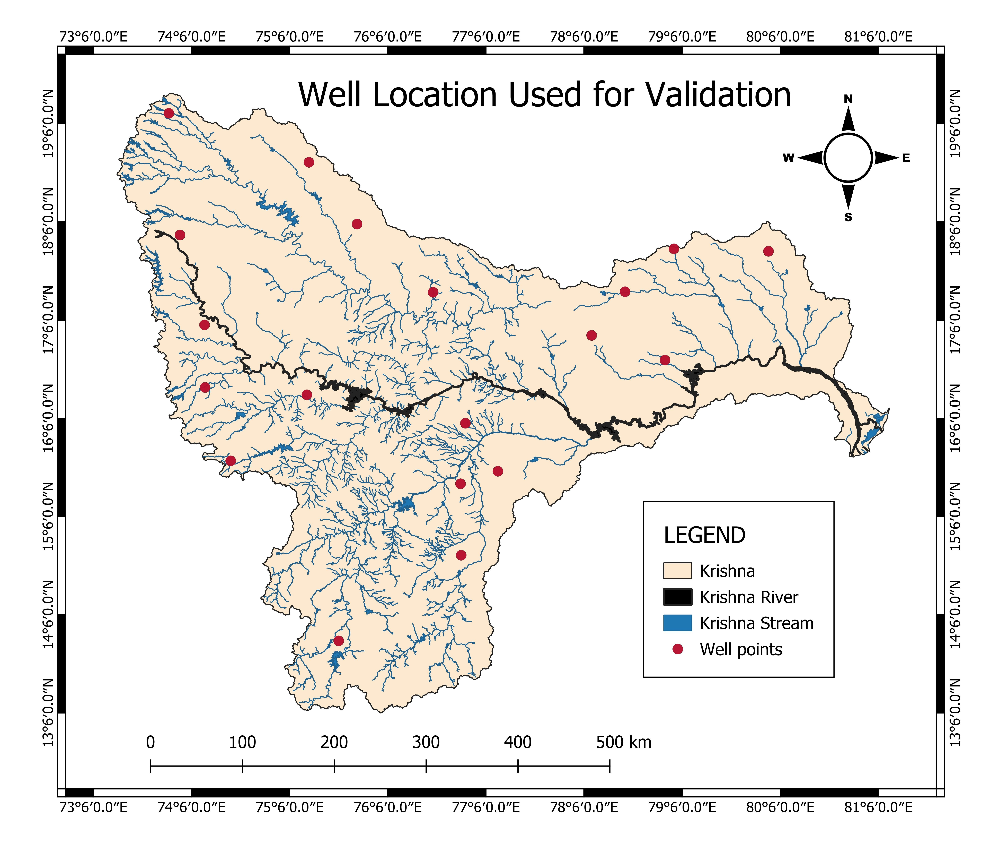

🌍
Groundwater Storage &
Stress Zone Mapping
Assessment of Groundwater Storage and Stress Zones
using GRACE Satellite Data, Google Earth Engine,
QGIS and Python.
Introduction
Groundwater is one of the most important freshwater resources
for agriculture, domestic use and industry.
This project evaluates groundwater storage changes and
groundwater stress conditions across the Krishna River Basin
using satellite observations and geospatial techniques.
The study integrates GRACE satellite data,
GLDAS Soil Moisture,
Google Earth Engine,
QGIS and Python
to generate groundwater storage maps
and groundwater stress zone maps
for sustainable water resource management.
Study Area
Study Area :
Krishna River Basin, India
Study Period :
2010 – 2024
Study Area Map
Objectives
- Estimate Groundwater Storage (GWS).
- Create Groundwater Stress Zone Maps.
- Analyze groundwater variation from 2010–2024.
- Assessgroundwater Trend from 2010–2024.
- Support sustainable groundwater management.
Software Used
Google Earth Engine
QGIS
Python
Microsoft Excel
Methodology Flowchart
Study Area
↓
Satellite Data Collection
↓
Google Earth Engine Processing
↓
Groundwater Storage Calculation
↓
Groundwater Stress Zone Mapping
↓
Validation
↓
Final Maps
Maps Gallery

Groundwater Stress Zone Map

GWS Trend Analysis

Validation (CGWB Well Data)
Results
- Generated annual Groundwater Storage maps (2010–2024).
- Prepared Groundwater Stress Zone Map.
- Identified groundwater depletion regions.
- Validated results using CGWB observation well data.